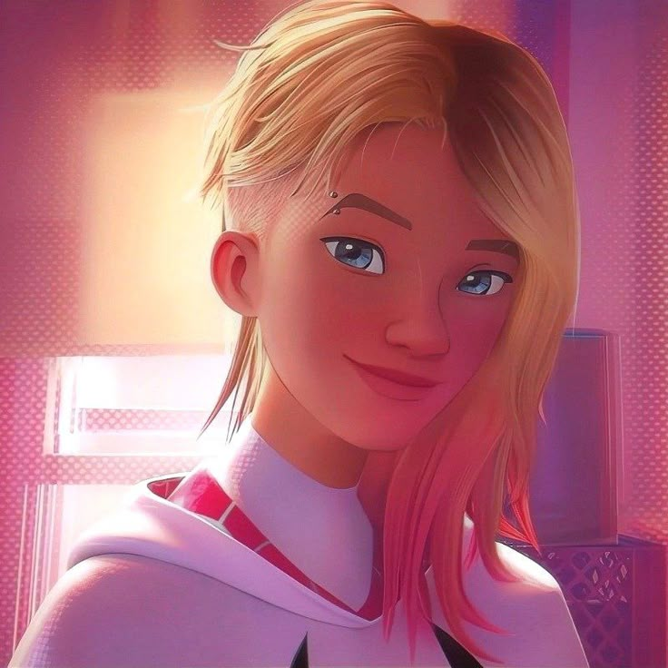
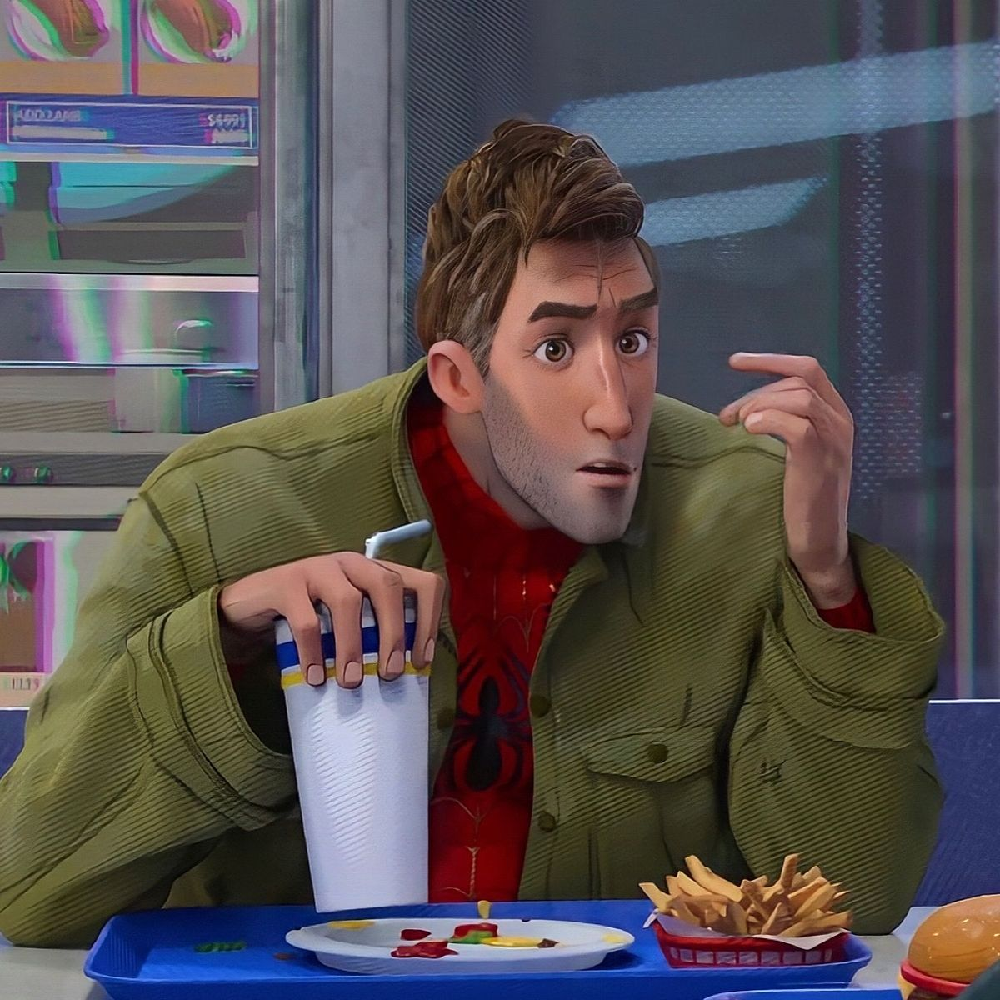
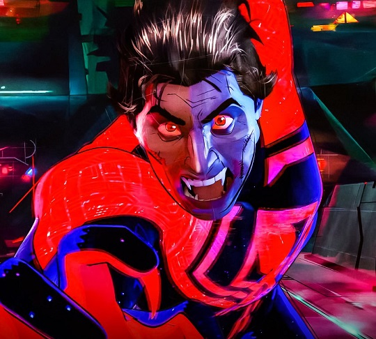

Miles Morales
Terra-1610O jovem do Brooklyn que assumiu o manto após a morte do Peter Parker de seu universo.
Descubra as infinitas possibilidades e heróis espalhados pela Teia da Vida e do Destino.
Explorar Variantes
O jovem do Brooklyn que assumiu o manto após a morte do Peter Parker de seu universo.

A baterista radiante que foi picada no lugar de Peter, tornando-se a Mulher-Aranha (Ghost-Spider).

Um Homem-Aranha mais velho, cansado, mas que reencontra seu propósito ao ser sugado para outro universo.

O Homem-Aranha do ano 2099, líder da Sociedade Aranha encarregada de proteger o cânone.